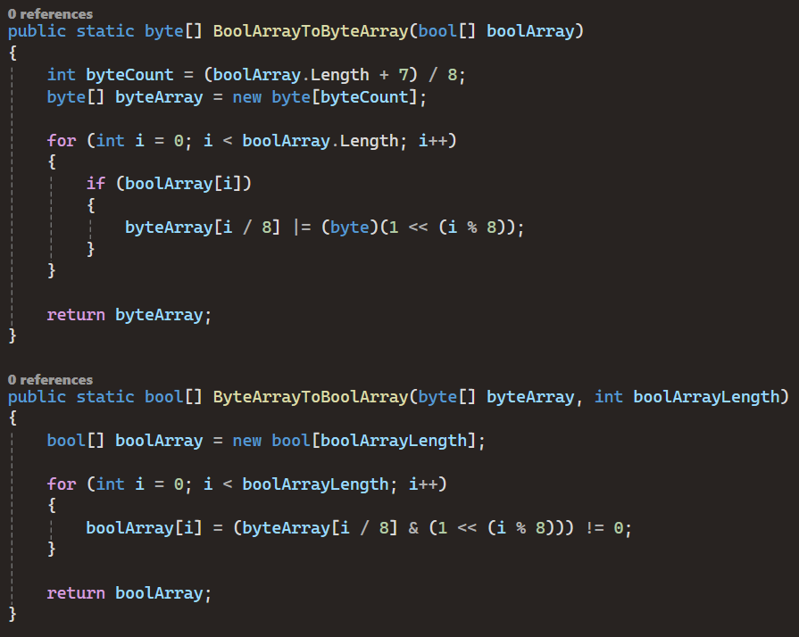
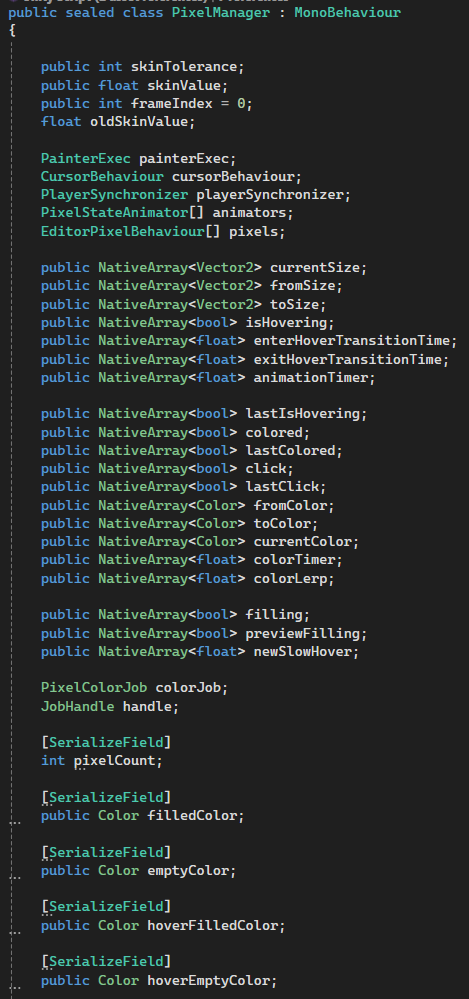
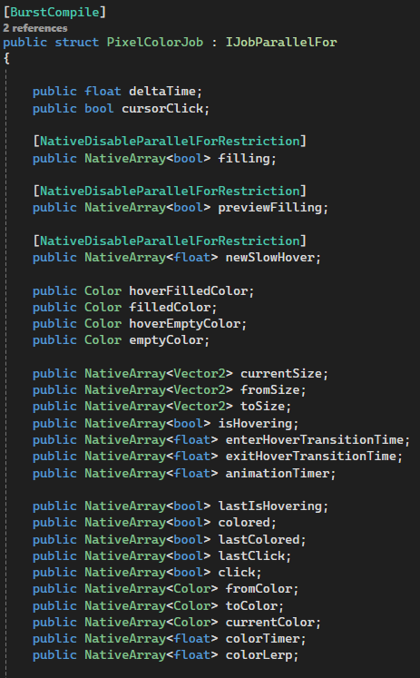
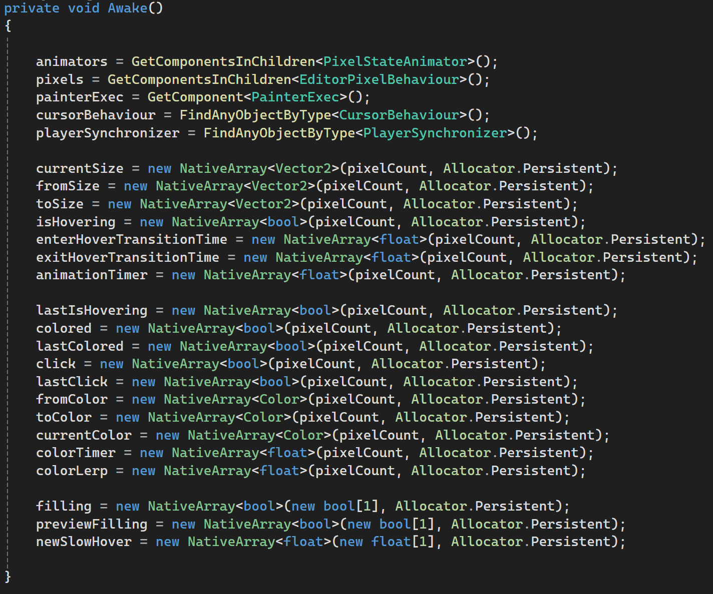
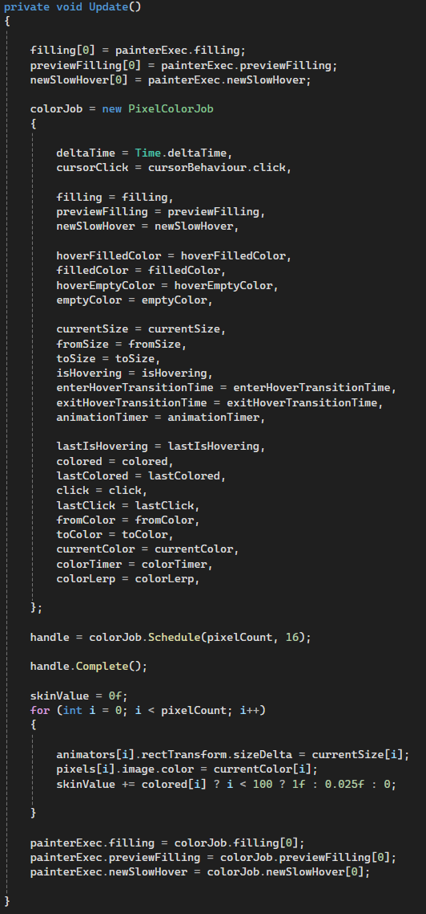
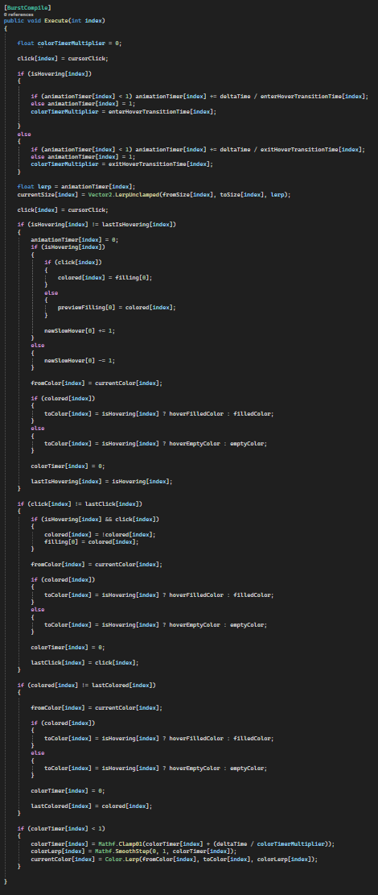

Code showcase
Both pseudo and raw code, showcasing what I have done under the hood to solve problems and create systems
Content
1. My game engine
2. Custom datatype using bitwise
3. Multithreading with Unity jobs
My game engine
My engine uses a component system, similar to Unity.
To the left is a general overview in pseudo code of how the components work, and how the engine handles them.
To the right is a code snippet from the front end game class, showing off a very basic example where I spawn 1000 objects, add a render component to the objects, then despawn them one by one in the Game Update loop.


Everything from the input system, to the use of OpenTK - OpenGL bindings is handled by me, no external libraries, except ones that allow me to read PNG and FBX files so I can read colors, vertices and normals to store them as arrays, as well as acess to OpenGL
(For a visual display, go to the Projects tab)
Custom datatype using bit manipulation
Picture this very specific and inconvinient problem.
You want to create an editor with a 3 dimentional grid system, each cell can have 2 states, on or off.
You want to allow players to use this to customize something they will be using in an online game.
My first idea was to just convert the grid to an array of boolean values, which works just fine, until you realize that loading the grid does NOT scale when other players have to load all the cells.
This example is a classical networking problem, you want to avoid sending alot of data over the network in a game if you can avoid it.
To make this much more scalable, we can introduce something called bit manipulation.
Each cell only has 2 states, we can call this on or off, and store each cell in a single bit, allowing us to store 8 cells in a single byte.

I added this function to a helper class, and used it to pack the grid into a byte array where the bits represent the cells.
The first function is responsible for packaging all the cells into a byte array.
The second function is responsible for unpacking all the cells from the byte array, converting the cells back to a bool array for ease of use later on.
(For a visual display, go to the Projects tab)
Multithreading with Unity jobs
If you have gotten far enough into programming, you might have seen the topic of multithreading discussed, and most likely seen alot of pessimism around the topic.
This is due to how multithreading on our processors have a huge flaw, that being unsafe data access.
Reading or Writing data to a piece of memory is not safe if that data is being operated on by another thread/process.
The solution to this problem is knowing how to dispatch a thread, and where that thread will be working with memory before the dispatch, that way you can allocate threads.
To separate pieces of memory and you won't have to worry about operations working on the same memory.
This is where the "Job system" in Unity comes in, It is structured specifically for this purpose, segmenting memory into batches that's operated on by different threads.
The example below is how I used the "Job System" to optimize a 2d grid editor, allowing me to add animations to the grid when editing on it.
First we need to prepare the fields that will be used, again, we need to know what data is being modified before we even modify it.
This is why everything is based on a data oriented structure, with arrays containing the data.


Now that we have declared what data we need, we have to initialize the data before we can work on it.

Then we dispatch the data to the Unity job system.
Unity uses its own Types and works alot for us in the backend here, we only have to pass along the references to the data we want to work on.
We also have to declare how large the batches should be, aka how many array elements each thread should iterate on at a time.
When all setup is complete, we wait for the job/multithreaded operation to complete, then we are free to use the data again.

The execution function that runs on each element of the collective arrays looks like this.

(For a visual display, go to the Projects tab)